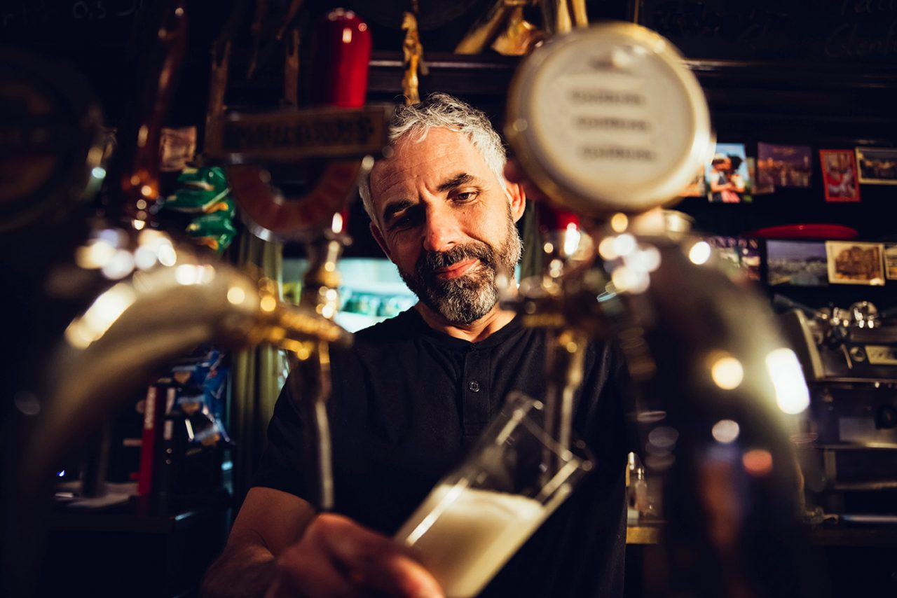

Líneas y grifos
Limpieza de líneas de cerveza, grifos, boquillas y puntos visibles donde se acumulan restos.
Limpieza profesional de líneas, grifos y conexiones para locales que sirven cerveza de barril en Adeje, Las Américas, Los Cristianos y Las Chafiras.
Cuando una línea de cerveza no está limpia, el problema se nota en la barra: la cerveza pierde frescura, aparece espuma irregular y el servicio se vuelve más lento.
Revisamos el circuito, limpiamos las líneas, enjuagamos la instalación, limpiamos grifos y comprobamos las conexiones visibles.

La limpieza empieza con una revisión visual de la instalación. Miramos grifos, líneas, conexiones, presión y puntos donde pueden aparecer residuos o pequeñas fugas.
Limpieza de líneas de cerveza, grifos, boquillas y puntos visibles donde se acumulan restos.
Enjuague de la instalación para dejar el circuito preparado antes de volver a servir.
Control visual de presión, conexiones, fugas y señales de desgaste en la zona de trabajo.
Trabajamos en Adeje, Costa Adeje, Playa de las Américas, Los Cristianos, San Miguel de Abona y Las Chafiras. Otras zonas de Tenerife bajo consulta.
También puedes ver el mantenimiento completo o las tarifas.
Pedir limpieza de líneas